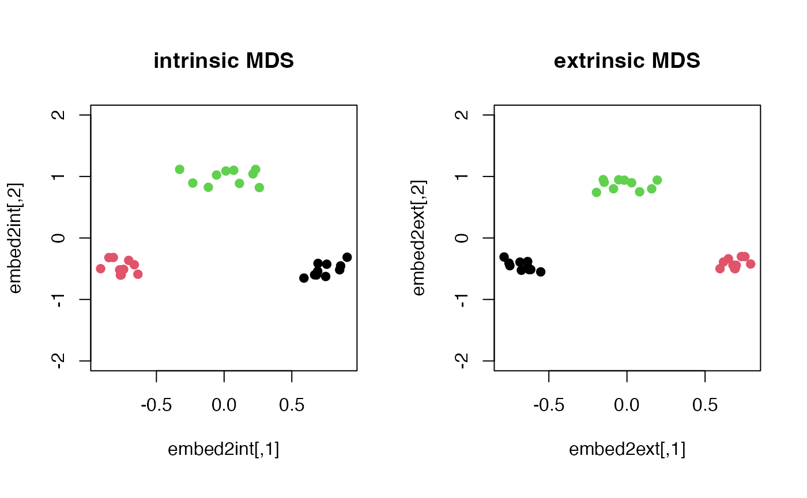

Given \(N\) observations \(X_1, X_2, \ldots, X_N \in \mathcal{M}\),
apply multidimensional scaling to get low-dimensional embedding
in Euclidean space. Usually, ndim=2,3 are chosen for visualization.
riem.mds(riemobj, ndim = 2, geometry = c("intrinsic", "extrinsic"))
| riemobj | a S3 |
|---|---|
| ndim | an integer-valued target dimension (default: 2). |
| geometry | (case-insensitive) name of geometry; either geodesic ( |
a named list containing
an \((N\times ndim)\) matrix whose rows are embedded observations.
discrepancy between embedded and original distances as a measure of error.
Torgerson WS (1952). “Multidimensional scaling: I. Theory and method.” Psychometrika, 17(4), 401--419. ISSN 0033-3123, 1860-0980.
#------------------------------------------------------------------- # Example on Sphere : a dataset with three types # # 10 perturbed data points near (1,0,0) on S^2 in R^3 # 10 perturbed data points near (0,1,0) on S^2 in R^3 # 10 perturbed data points near (0,0,1) on S^2 in R^3 #------------------------------------------------------------------- ## GENERATE DATA mydata = list() for (i in 1:10){ tgt = c(1, stats::rnorm(2, sd=0.1)) mydata[[i]] = tgt/sqrt(sum(tgt^2)) } for (i in 11:20){ tgt = c(rnorm(1,sd=0.1),1,rnorm(1,sd=0.1)) mydata[[i]] = tgt/sqrt(sum(tgt^2)) } for (i in 21:30){ tgt = c(stats::rnorm(2, sd=0.1), 1) mydata[[i]] = tgt/sqrt(sum(tgt^2)) } myriem = wrap.sphere(mydata) mylabs = rep(c(1,2,3), each=10) ## MDS EMBEDDING WITH TWO GEOMETRIES embed2int = riem.mds(myriem, geometry="intrinsic")$embed embed2ext = riem.mds(myriem, geometry="extrinsic")$embed ## VISUALIZE opar = par(no.readonly=TRUE) par(mfrow=c(1,2), pty="s") plot(embed2int, main="intrinsic MDS", ylim=c(-2,2), col=mylabs, pch=19) plot(embed2ext, main="extrinsic MDS", ylim=c(-2,2), col=mylabs, pch=19)  par(opar)